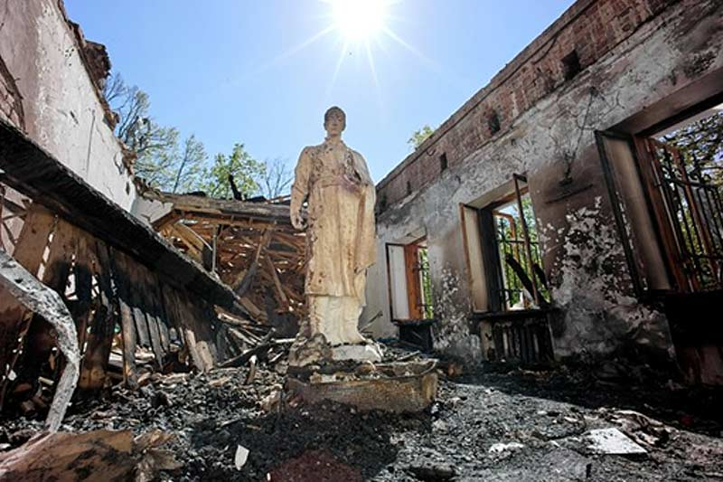
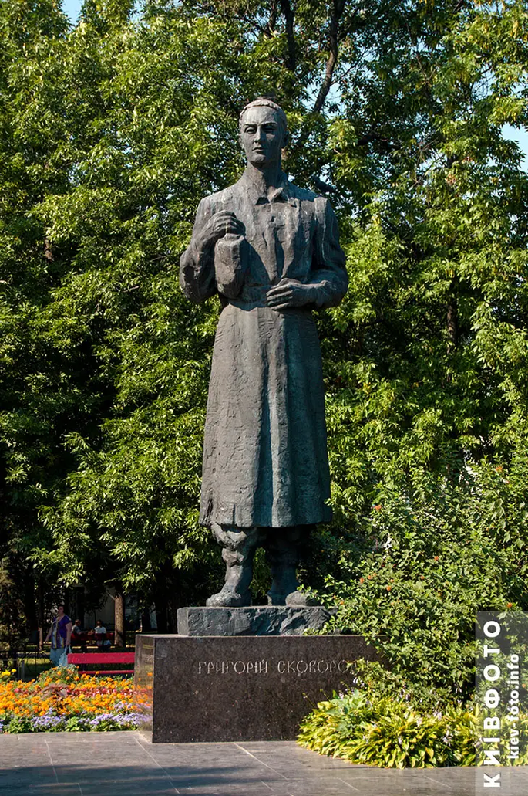

Часова лінія
- 1722
Народження
Народився в селі Чорнухи на Полтавщині в родині козака.
- 1734
Київська академія
Вступив до Києво-Могилянської академії, де вивчав мови, поетику, філософію та богослов’я. Навчання кілька разів переривалося.
- 1741
Придворна капела
Завдяки гарному голосу потрапив до придворної співацької капели в Петербурзі.
- 1745–1750
Подорож Європою
Супроводжував придворного посланця до Угорщини; побував також в Австрії, Словаччині та інших краях, вивчав мови й філософію.
- 1750-ті
Викладач і домашній вчитель
Викладав у Переяславі, потім був домашнім учителем на Слобожанщині.
- 1759–1769
Харківський колегіум
Викладав у Харкові. Через конфлікти з керівництвом залишив посаду.
- 1769–1794
Мандрівний філософ
Відмовився від посад і гідного життя заради свободи. Мандрував, жив у друзів, писав трактати, діалоги, байки й пісні.
- 1794
Смерть
Помер у селі Пана-Іванівка (тепер Сковородинівка на Харківщині). Саме там його поховано.
Маршрут мандрів
Основні місця, пов’язані з життям Сковороди:
- Чорнухи
- Київ
- Петербург
- Угорщина
- Переяслав
- Харків
- Пана-Іванівка
Місця пам'яті

Джерело: Національний літературно-меморіальний музей Г. С. Сковороди (skovoroda.man.gov.ua)

Джерело: Київ-фото (kiev-foto.info)
Епітафія
Світ ловив мене, та не спіймавнапис на могилі Сковороди
Ці слова кажуть про головний вибір його життя: не піддатися спокусам грошей, посад і слави, а залишитися вільним.